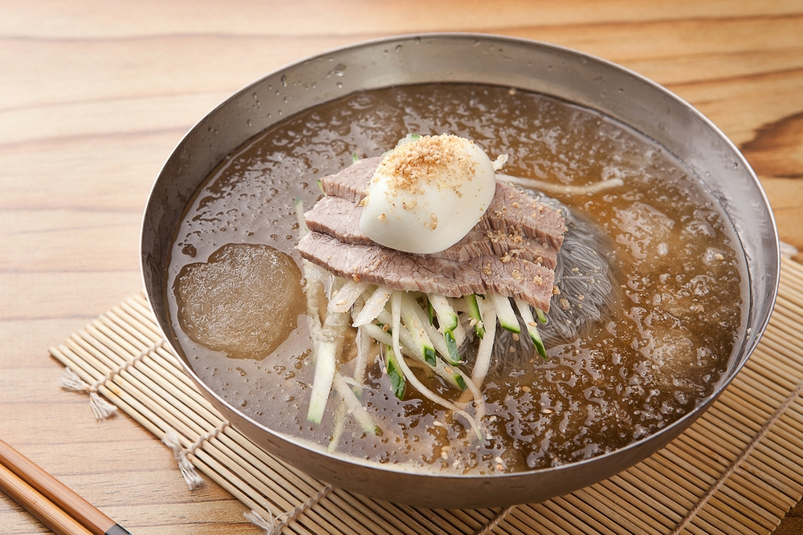
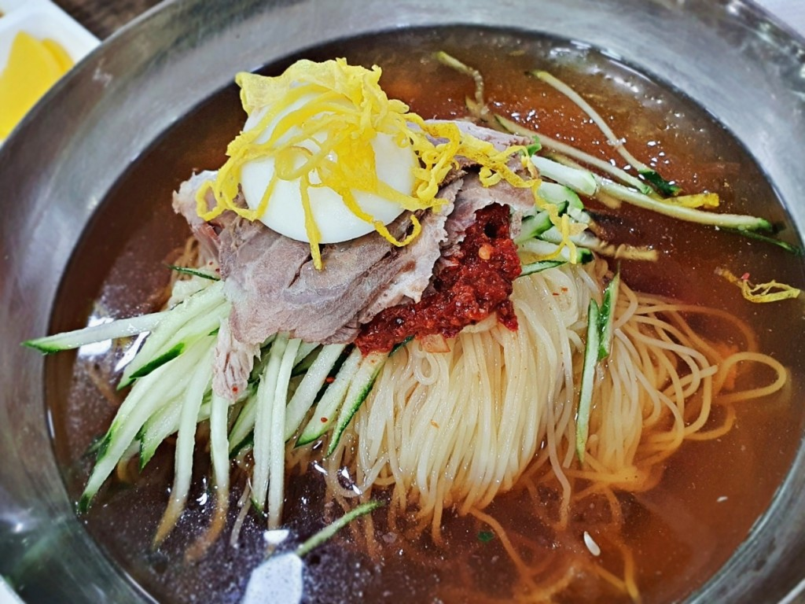

변주의 나라,
한국이 음식을
대하는 방식
원형을 지키는 데서 전통이 완성되지 않는다.
변주를 통해 더 강해지고, 더 넓어지며,
마침내 새로운 원형이 탄생한다.
한국 음식이 그 살아 있는 증거다.

원형을 철저히 지키는 나라가 있고, 원형을 과감히 비트는 나라가 있습니다. 겉으로는 전자가 더 '전통적'으로 보이지만, 사실 그 반대일 수 있습니다. 받아들인 것일수록 더 엄격하게 보존하려 하는 경우가 많기 때문입니다.
자기 것이 아니라는 불안 때문에 형식이 엄격해지고, 의례가 생기고, '장인정신'이라는 이름이 붙습니다. 원형 집착은 때로 체급의 증거가 아니라, 체급 부재에 대한 방어 반응일 수 있습니다.
반면 원형을 자유롭게 비트는 것은 자신감에서 나옵니다. 이것이 본래 자기 것이라는 확신이 있기에, 해체하고 재조립할 여유가 생기는 것입니다. 문화 체급이 뒷받침되어야만 진정한 변주가 가능합니다.
한국은 후자입니다. 그리고 그 태도가 음식에서 가장 선명하게 드러납니다. 네 가지 사례는 각기 다른 방향에서 같은 결론에 도달합니다.
결국 변주의 힘은 체급에서 나옵니다. 체급이 있으면 원형을 지키면서도 변주를 품을 수 있고, 원형이 없어도 새로운 원형을 만들어내며, 남의 재료조차 자기 것으로 만들어버립니다.
평양냉면, 함흥냉면처럼 뚜렷한 원형이 있고, 육수 비율·면의 질감·고명 배치까지 세세한 규칙이 존재합니다. 원형에서 조금만 벗어나도 "그건 냉면이 아니다"라는 비판이 나올 정도로 변주에 보수적입니다.
6.25 전쟁 당시 부산으로 피난 온 실향민들이 메밀 대신 밀가루로 면을 뽑으면서 탄생했습니다. 없는 것에서 시작했는데, 더 자유롭게 진화한 역설적인 사례입니다. 원형 타이틀이 없었기에 오히려 자유로웠고, 부산만의 독자적인 원형으로 자리 잡았습니다.
궁중 간장 떡볶이라는 뿌리가 있지만, 로제, 마라, 크림, 치즈 등 무수한 변주가 등장했습니다. 그런데도 여전히 '떡볶이'로 불립니다. 정체성이 워낙 강력하기에 어떤 변주도 자신의 카테고리 안으로 끌어들이는 힘을 발휘합니다.
옥수수는 아메리카 원산, 치즈는 유럽 유래입니다. 90년대 부산·경남 지역 횟집 스끼다시에서 시작해 "Korean Corn Cheese"로 불릴 정도로 완전히 한국 음식이 되었습니다. 변주의 궁극적 형태입니다.
규칙이 곧 정체성인 음식. 엄격한 형식이 오히려 그 가치를 지탱합니다.

없음에서 시작해 새로운 정체성을 만든 부산의 음식.
모든 변주를 흡수하고도 여전히 떡볶이.
원재료는 외국산, 정체성은 완벽한 한국 음식.
발효는 같은 재료를 완전히 다른 맛으로 바꾸는 변주이고, 시장은 외국 음식을 흡수해 역전시키는 변주이며, 떡볶이는 로제와 마라를 삼키고도 여전히 떡볶이입니다. 밀면이 냉면의 그림자를 안고 새로운 길을 연 것도, 콘치즈가 서구 재료를 안주 문화로 재해석한 것도 모두 변주입니다.
한국이 변주를 잘하는 것은 우연이 아닙니다. 수천 년 문명적 축적을 통해 쌓은 자신감이 있기에, 흔들리지 않고 해체하고 재조립할 수 있는 것입니다. 형식에 대한 집착이 아닌 내용에 대한 확신. 그것이 진짜 원동력입니다.
냉면이 있으면 밀면을 만들고, 치즈가 들어오면 치즈 떡볶이를 만들어내는 그 본능이 — 한국을 진정한 변주의 나라로 만든 원동력입니다. 오히려 과거에 단점으로 지적되던 '빠른 흡수와 따라하기'가 음식에서는 강렬한 동력이 되었습니다.
이 변주의 자신감이야말로 한국 미식의 가장 한국적인 힘입니다.
그리고 앞으로도 한식이 SS급으로 완전히 복귀하는, 가장 강력한 엔진이 될 것입니다.